Forecasting
Topic 7
Goals
- To introduce forecasting with simple (but sensible) common-sense methods and motivate when they suffice.
- To understand forecasting as signal extraction, and to diagnose forecast quality via residuals and out-of-sample testing.
- To establish that the optimal (minimum mean-square-error) forecast is the conditional expectation.
- To derive point forecasts and forecast-error variances in the \(\mathsf{AR}(1)\), \(\mathsf{MA}(1)\), \(\mathsf{ARMA}(1,1)\) and \(\mathsf{ARIMA}(1,1,1)\) cases.
Key Concept
The optimal forecast of \(Y_{t+h}\) is the conditional expectation, \(\mathsf{E}(Y_{t+h} \mid \mathcal{F}_t)\).
The introductory sections and many R examples in this topic are borrowed and adapted from Hyndman & Athanasopoulos, Forecasting: Principles and Practice (2021), 3rd edition — referred to hereafter as ‘FPP’.
1 Introduction
Although the creation of good parameter estimates is often viewed as the primary goal of econometrics (e.g. to assist with causal inference), to many researchers and practitioners (e.g. in finance and macroeconomics) a goal of equal — if not greater — importance is the creation of good forecasts. Forecasting is about predicting the future as accurately as possible, given all information available, including present and historical data and any a priori knowledge of relevant future events. By definition, forecasting is an out-of-sample prediction endeavour.
The terminology is not universal, but here is how we use certain keywords. Prediction is the umbrella term:
- In-sample prediction yields fitted values.
- Out-of-sample prediction is either pre-sample (yielding backcast values) or post-sample (yielding forecast values — our focus).
It is useful to keep these distinctions in mind: the model that best fits the sample need not yield the best forecasts when tested, and the model with the best short-term forecasts need not be optimal at longer horizons. In this topic we introduce forecasting with simple methods, then leverage everything from earlier topics to discuss how to (i) model the trend-cycle, seasonal and (difference-)stationary components; (ii) estimate any parameters; (iii) create point forecasts at various horizons; (iv) quantify forecast uncertainty; and (v) test forecast performance.
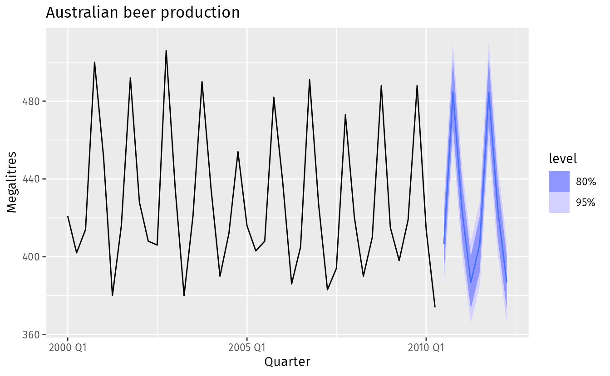
The figure above is an example of the end-product we hope to create. But how do we start? Before any forecasting exercise it is vital to understand the data — inspect it, and possibly speak to those who generated it. Are there obvious patterns? A clear trend? Is seasonality important? Is there evidence of business cycles? Are there gaps or outliers needing expert explanation? Such exploratory analysis helps ensure that we (i) capture genuine patterns for extrapolation; (ii) do not replicate random fluctuations or one-off past events; and (iii) do not let slip common sense in pursuit of technical sophistication.
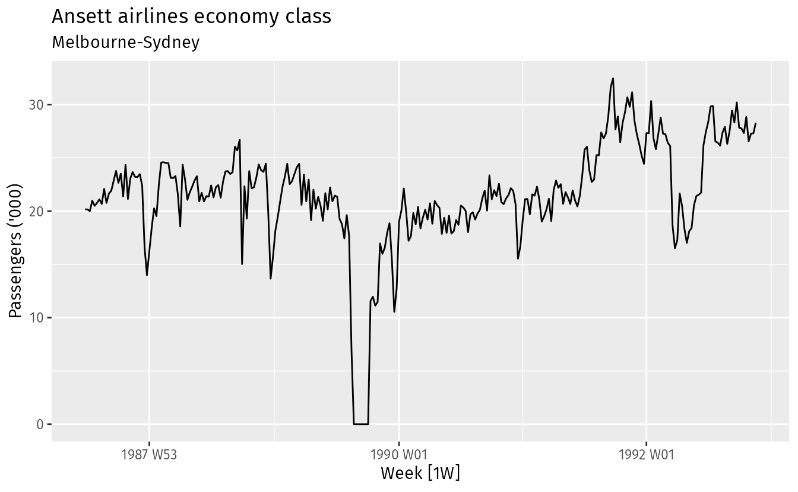
The plot above immediately reveals some interesting features:
- A period in 1989 with no passengers, due to an industrial dispute.
- A period of reduced load in 1992, due to a trial replacing some economy seats with business class.
- A large increase in passenger load in the second half of 1991.
- Large dips around the start of each year, due to holiday effects.
- A long-term fluctuation in the level of the series.
Any modeller must take these features into account (whether for incorporation or omission) to forecast effectively.
Some things are easier to forecast than others. The time of the sunrise tomorrow morning can be forecast precisely. On the other hand, tomorrow’s lotto numbers cannot be forecast with any accuracy. The predictability of an event or a quantity depends on several factors including: (1) how well we understand the factors that contribute to it; (2) how much data is available; (3) how similar the future is to the past; and (4) whether the forecasts can affect the thing we are trying to forecast.
For example, short-term forecasts of residential electricity demand can be highly accurate because all four conditions are usually satisfied… On the other hand, when forecasting currency exchange rates, only one of the conditions is satisfied: there is plenty of available data. However, we have a limited understanding of the factors that affect exchange rates, the future may well be different to the past if there is a financial or political crisis, and forecasts of the exchange rate have a direct effect on the rates themselves… Consequently, forecasting whether the exchange rate will rise or fall tomorrow is about as predictable as forecasting whether a tossed coin will come down as a head or a tail… In situations like this, forecasters need to be aware of their own limitations, and not claim more than is possible.
2 Notation
3 Common-sense methods for forecasting
Some forecasting methods are simple yet effective. We use four common-sense methods to corroborate more sophisticated techniques, illustrated (following FPP) with quarterly Australian clay brick production between 1970 and 2004.
The four methods applied to real-world data are shown below.
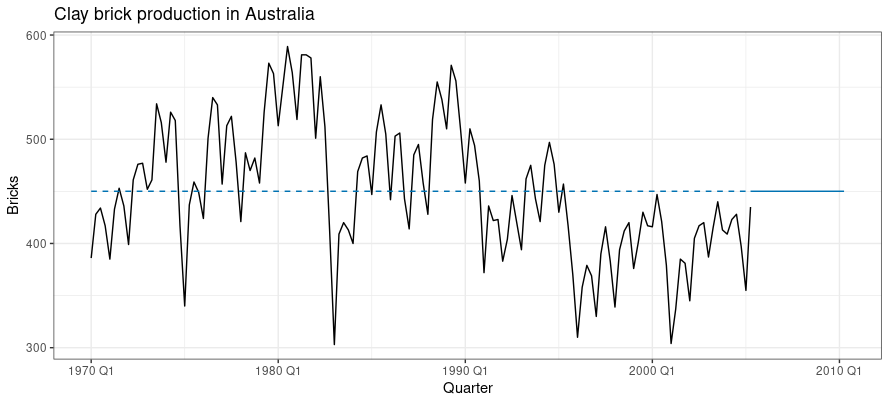
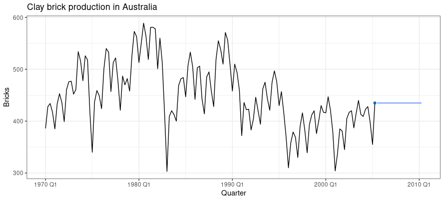
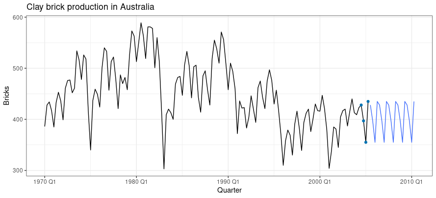
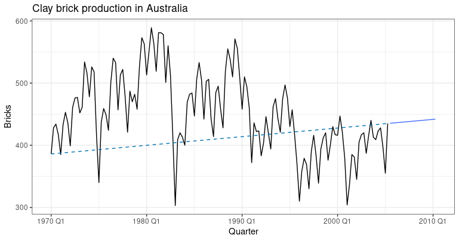
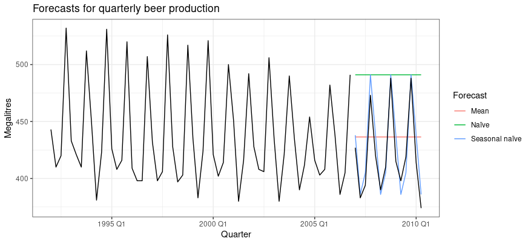
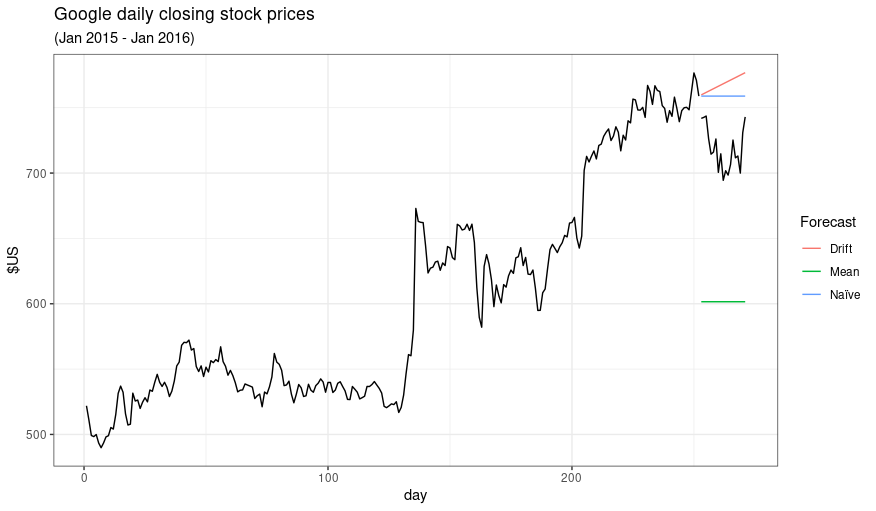
Sometimes one of these simple methods is the best available; in other cases they fail (as with Google stock prices). Either way, they serve as useful common-sense benchmarks to corroborate the method of choice. Below, we explore the motivation behind the \(M\), \(N\) and \(D\) methods. (The \(S\) method is a direct extension of the \(N\) case.)
4 Heuristics
Some methods perform better than others, and which works best depends on the nature of the series being forecast.
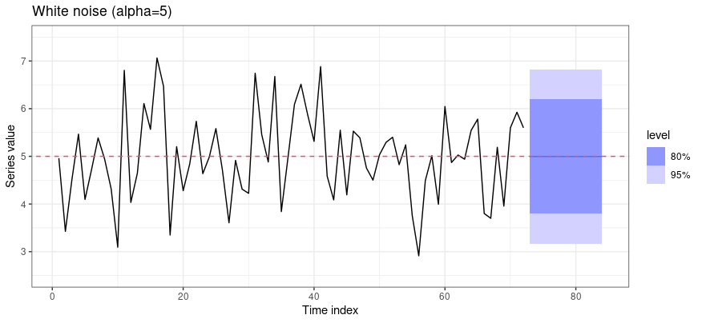
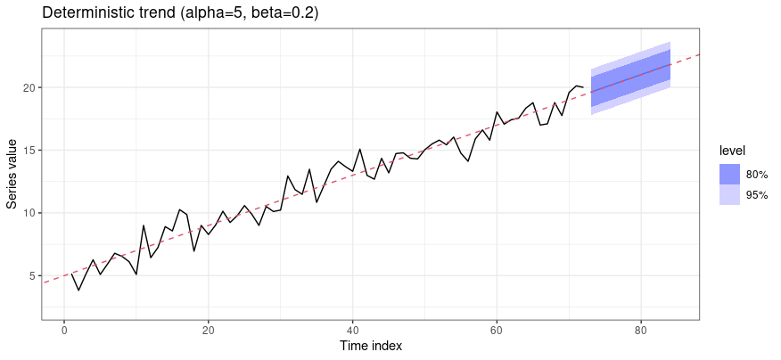
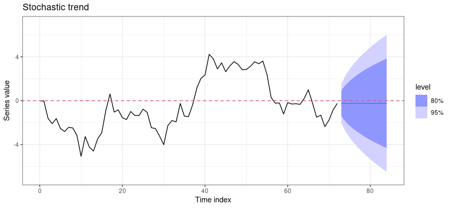
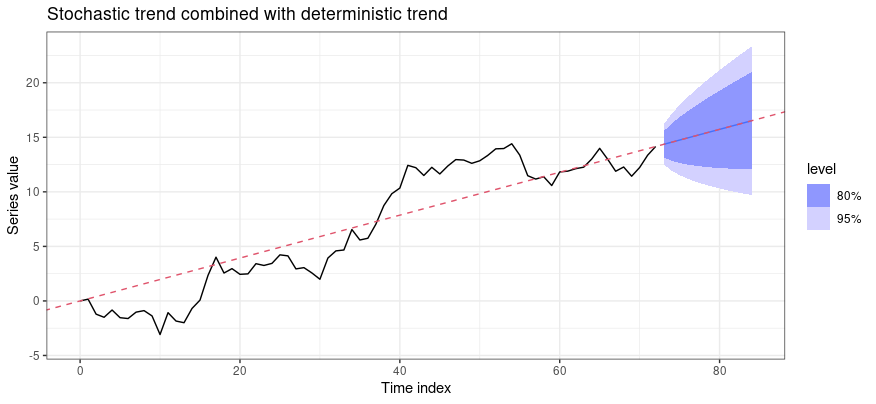
#| '!! shinylive warning !!': |
#| shinylive does not work in self-contained HTML documents.
#| Please set `embed-resources: false` in your metadata.
#| standalone: true
#| viewerHeight: 540
library(shiny)
ui <- fluidPage(
tags$style(HTML("body{font-family:system-ui,sans-serif;}")),
titlePanel("Mean / Naive / Drift forecasts"),
sidebarLayout(
sidebarPanel(
selectInput("type", "Underlying series",
c("Stable mean", "Linear trend", "Random walk", "Random walk + drift"),
"Random walk + drift"),
sliderInput("T", "Training length T", 40, 200, 100, 20),
sliderInput("h", "Forecast horizon h", 5, 60, 30, 5),
sliderInput("seed", "Random seed", 1, 100, 11, 1)
),
mainPanel(plotOutput("plot", height = "440px"))
)
)
server <- function(input, output) {
output$plot <- renderPlot({
set.seed(input$seed)
n <- input$T; e <- rnorm(n)
y <- switch(input$type,
"Stable mean" = 5 + e,
"Linear trend" = 0.2 * (1:n) + e,
"Random walk" = cumsum(e),
"Random walk + drift" = 0.2 * (1:n) + cumsum(e))
h <- input$h; fut <- (n + 1):(n + h)
fM <- rep(mean(y), h) # Mean
fN <- rep(y[n], h) # Naive
fD <- y[n] + (1:h) * (y[n] - y[1]) / (n - 1)# Drift
plot(1:n, y, type = "l", xlim = c(1, n + h), lwd = 2,
xlab = "t", ylab = expression(Y[t]),
ylim = range(y, fM, fN, fD))
lines(fut, fM, col = 2, lwd = 2); lines(fut, fN, col = 3, lwd = 2)
lines(fut, fD, col = 4, lwd = 2); abline(v = n, lty = 3)
legend("topleft", c("Mean", "Naive", "Drift"),
col = c(2, 3, 4), lwd = 2, bty = "n")
})
}
shinyApp(ui, server)5 Diagnostics and performance checks (in practice)
The idea of “knowing when to quit” — persevering with signal extraction until only noise remains — motivates a few diagnostic checks to gauge the quality of our forecasts.
Any model failing these can be improved upon. (A model that satisfies them is not necessarily best — different models can satisfy both properties; checking them gauges whether a method exploits all available information, but is not a good way to choose among competing methods that already satisfy them.) The next two properties are not essential but desirable.
Consider again Google stock prices. The residuals from the naïve method (the large positive jump is 17 July 2015, when the price rose 16% on strong results) are analysed by FPP:
These graphs show that the naïve method produces forecasts that appear to account for all available information. The mean of the residuals is close to zero and there is no significant correlation in the residuals series… apart from the one outlier… the residual variance can be treated as constant… The histogram suggests that the residuals may not be normal — the right tail seems a little too long… Consequently, forecasts from this method will probably be quite good, but prediction intervals that are computed assuming a normal distribution may be inaccurate.
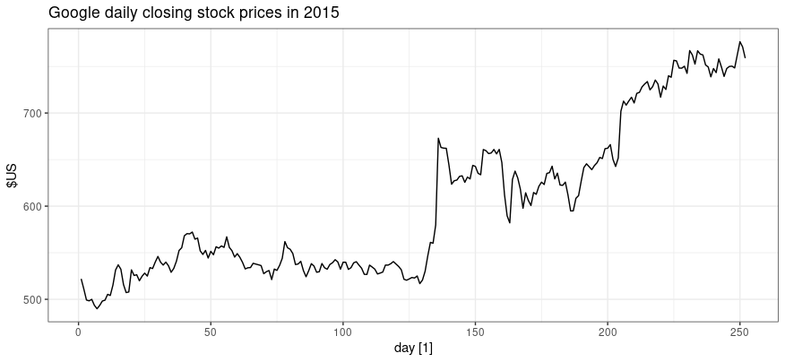
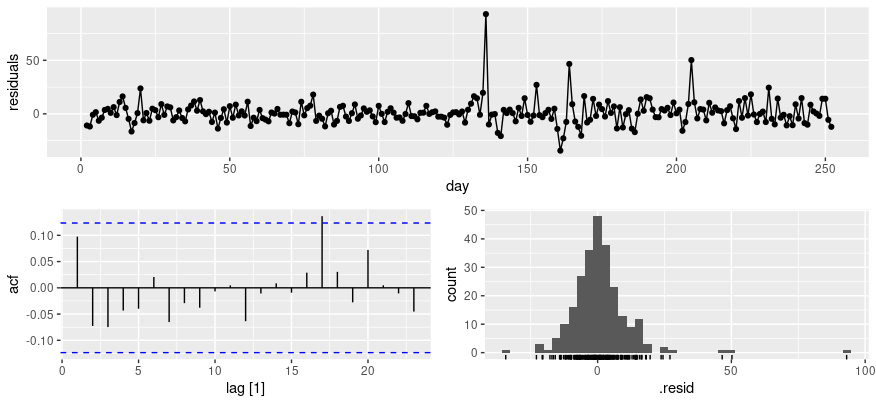
After fitting, it is important to evaluate forecast accuracy using genuine forecasts. The size of in-sample residuals is not a reliable indicator of out-of-sample forecast errors. Accuracy can only be determined by how well a model performs on new data not used in fitting. It is common to separate the data (at the outset) into training and test portions: the training data estimate parameters; the test data evaluate accuracy. The test set is typically about 20–25% of the total sample (ideally at least as large as the maximum forecast horizon). Note that a model fitting the training data well need not forecast well; a perfect fit can always be obtained with enough parameters, but over-fitting is just as bad as missing a systematic pattern. One can compute the \(h\)-s.a. mean-square forecast error (MSFE), \[ \frac{1}{h}\sum_{k=1}^{h}\left(Y_{T+h} - Y_{T+h\mid T}\right)^2, \] and pick the candidate (from a shortlist fitted on the training set) with the lowest estimated MSFE at the desired horizon.
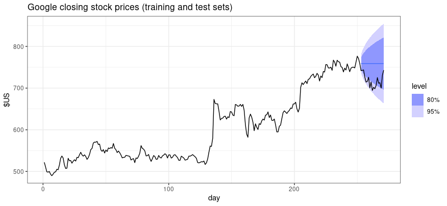
6 Forecast-error variance formulas for simple methods
Once diagnostics are done and our point forecasts satisfy the essential and desirable properties, we can compute forecast intervals. Below is a summary of the \(h\)-s.a. forecast-error variances (FEV), both for known parameters and (non-examinable) for unknown parameters:
| Method | \(h\)-s.a. FEV (params known) | \(h\)-s.a. FEV (params unknown) |
|---|---|---|
| \(M\) | \(\sigma^2\) | \(\widehat{\sigma}^2(1 + 1/T)\) |
| \(N\) | \(\sigma^2 h\) | \(\widehat{\sigma}^2 h\) |
| \(S\) | \(\sigma^2(k+1)\) | \(\widehat{\sigma}^2(k+1)\) |
| \(D\) | \(\sigma^2 h\) | \(\widehat{\sigma}^2 h(1 + h/(T-1))\) |
These expressions are handy for back-of-the-envelope calculations: \[ \widehat{Y}_{T+h\mid T} \pm 2\sqrt{\widehat{\mathsf{FEV}}(Y_{T+h\mid T})} \] gives an approximate 95–96% forecast interval (under normality).
7 Optimal prediction (in theory)
Suppose your task is to guess a stranger’s salary, \(Y\). What would be your best guess? \(\mathsf{E}(Y)\) — treat the stranger as an average person. But your mind scans for information, \(\mathcal{F}\), that might improve the guess. Would it help if the individual wore a designer suit and drove up in a Bentley? Or wore tattered rags and had slept under a bridge? What is your best guess now — still \(\mathsf{E}(Y)\), or \(\mathsf{E}(Y\mid\mathcal{F})\)?
In time series, the information is the past: with \(X \equiv \mathcal{F}_t\), the optimal forecast of \(Y_{t+h}\) is the conditional expectation \(\mathsf{E}(Y_{t+h}\mid\mathcal{F}_t)\).
8 Forecasting in the \(\mathsf{ARIMA}\) framework
\(\mathsf{AR}(1)\)
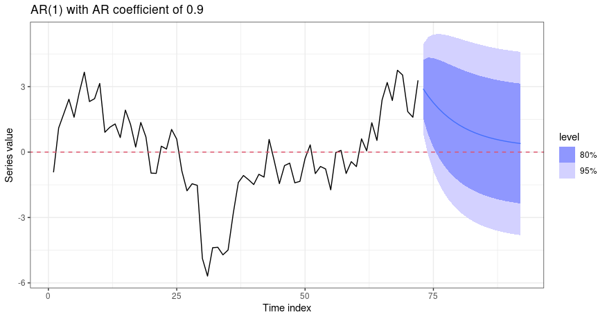
\(\mathsf{MA}(1)\)
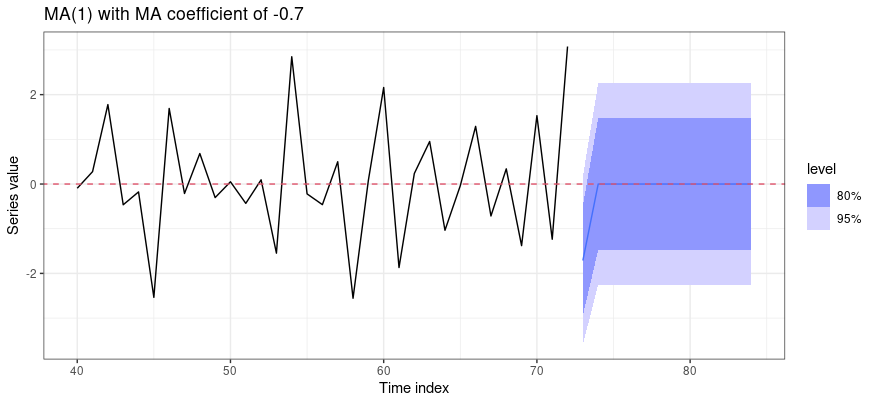
\(\mathsf{ARMA}(1,1)\)
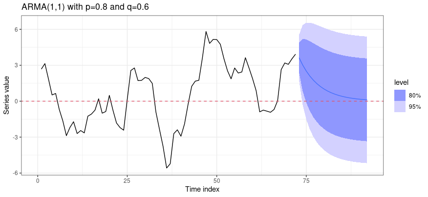
#| '!! shinylive warning !!': |
#| shinylive does not work in self-contained HTML documents.
#| Please set `embed-resources: false` in your metadata.
#| standalone: true
#| viewerHeight: 560
library(shiny)
ui <- fluidPage(
tags$style(HTML("body{font-family:system-ui,sans-serif;}")),
titlePanel("Forecast function and FEV bands"),
sidebarLayout(
sidebarPanel(
selectInput("model", "Model", c("AR(1)", "MA(1)", "ARMA(1,1)"), "AR(1)"),
sliderInput("phi", "phi", -0.95, 0.95, 0.7, 0.05),
sliderInput("th", "theta", -0.95, 0.95, 0.5, 0.05),
sliderInput("h", "Forecast horizon h", 5, 40, 20, 5),
sliderInput("seed","Random seed", 1, 100, 3, 1)
),
mainPanel(plotOutput("plot", height = "460px"))
)
)
server <- function(input, output) {
output$plot <- renderPlot({
set.seed(input$seed)
n <- 80; e <- rnorm(n); y <- numeric(n)
phi <- input$phi; th <- input$th
for (t in 2:n) {
ar <- if (input$model %in% c("AR(1)", "ARMA(1,1)")) phi * y[t - 1] else 0
ma <- if (input$model %in% c("MA(1)", "ARMA(1,1)")) -th * e[t - 1] else 0
y[t] <- ar + e[t] + ma
}
h <- input$h; f <- numeric(h); v <- numeric(h)
if (input$model == "AR(1)") {
for (k in 1:h) { f[k] <- phi^k * y[n]; v[k] <- (1 - phi^(2 * k)) / (1 - phi^2) }
} else if (input$model == "MA(1)") {
f[1] <- -th * e[n]; if (h > 1) f[2:h] <- 0
v[1] <- 1; if (h > 1) v[2:h] <- 1 + th^2
} else {
f[1] <- phi * y[n] - th * e[n]
if (h > 1) for (k in 2:h) f[k] <- phi * f[k - 1]
psi <- phi^((1:h) - 1) * (phi - th)
for (k in 1:h) v[k] <- 1 + if (k > 1) sum(psi[1:(k - 1)]^2) else 0
}
fut <- (n + 1):(n + h); sd <- sqrt(v)
plot(1:n, y, type = "l", xlim = c(40, n + h), lwd = 2,
xlab = "t", ylab = expression(Y[t]),
ylim = range(y[40:n], f + 2 * sd, f - 2 * sd))
polygon(c(fut, rev(fut)), c(f + 2 * sd, rev(f - 2 * sd)),
col = rgb(0, 0, 1, 0.15), border = NA)
lines(fut, f, col = 4, lwd = 2); abline(v = n, lty = 3, h = 0)
legend("topleft", paste(input$model, "forecast +/- 2 sd"), bty = "n")
})
}
shinyApp(ui, server)\(\mathsf{ARIMA}(1,1,1)\)
9 Concluding remarks
10 Review questions
- Distinguish between fitted values, backcasts and forecasts. Why might the model that fits the sample best not be the best forecaster?
- Define the Mean, Naïve, Seasonal naïve and Drift methods. For each, describe a signal-plus-noise data-generating process for which it is the sensible choice.
- State and prove that the conditional expectation \(\mathsf{E}(Y\mid X)\) is the minimum mean-square-error predictor of \(Y\). Why is this result of central interest in time series forecasting?
- Derive the \(h\)-step-ahead forecast function and forecast-error variance for an \(\mathsf{AR}(1)\) process. Contrast the behaviour of the forecast-error variance for stationary \(\mathsf{ARMA}\) versus integrated \(\mathsf{I}(d)\) (\(d>0\)) processes.
11 Further reading
- Hyndman & Athanasopoulos, Forecasting: Principles and Practice (FPP), 3rd edn., 2021 — for the introductory material and R examples.
- SS — for the underlying theory of forecasting in the \(\mathsf{ARMA}\)/\(\mathsf{ARIMA}\) framework.